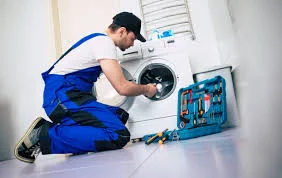

Lavadoras y Secadoras
- Reparación de tarjetas y motores
- Mantenimiento preventivo
- Cambio de bombas y correas

Neveras y Nevecones
- Carga de gas refrigerante
- Reparación de sistemas Inverter
- Cambio de bimetálicos y filtros

Aires Acondicionados
- Limpieza profunda (Mantenimiento)
- Detección y corrección de fugas
- Instalación y recarga de gas

Línea Blanca en General
- Hornos y Estufas a gas/eléctricas
- Calentadores de agua
- Repuestos originales garantizados